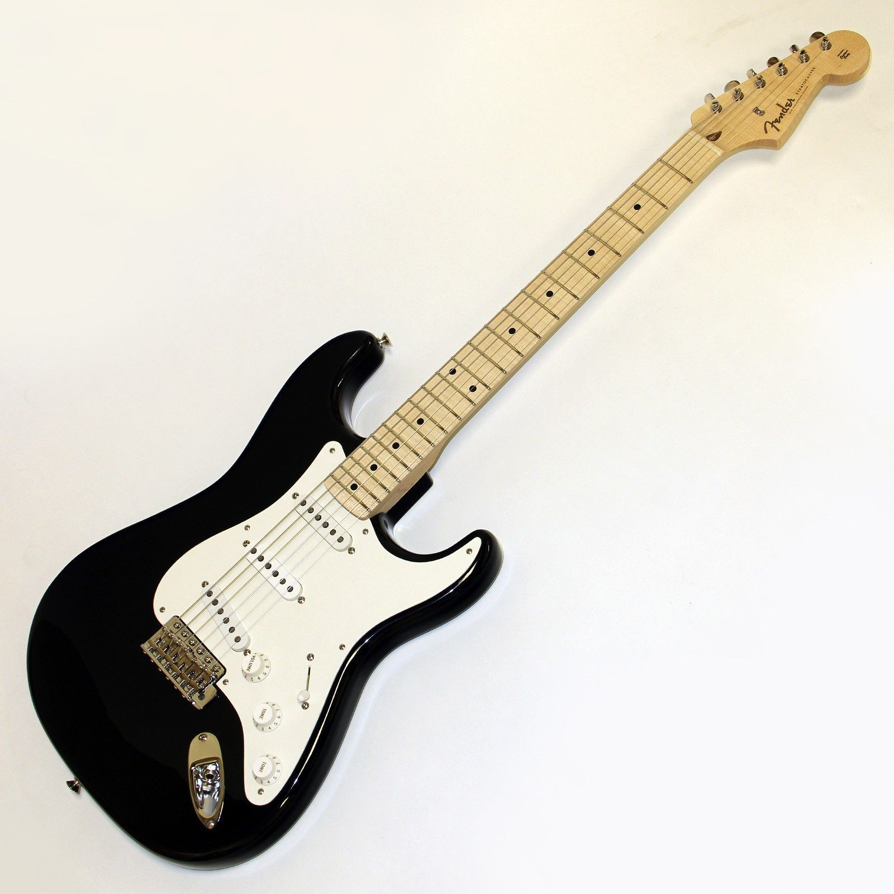
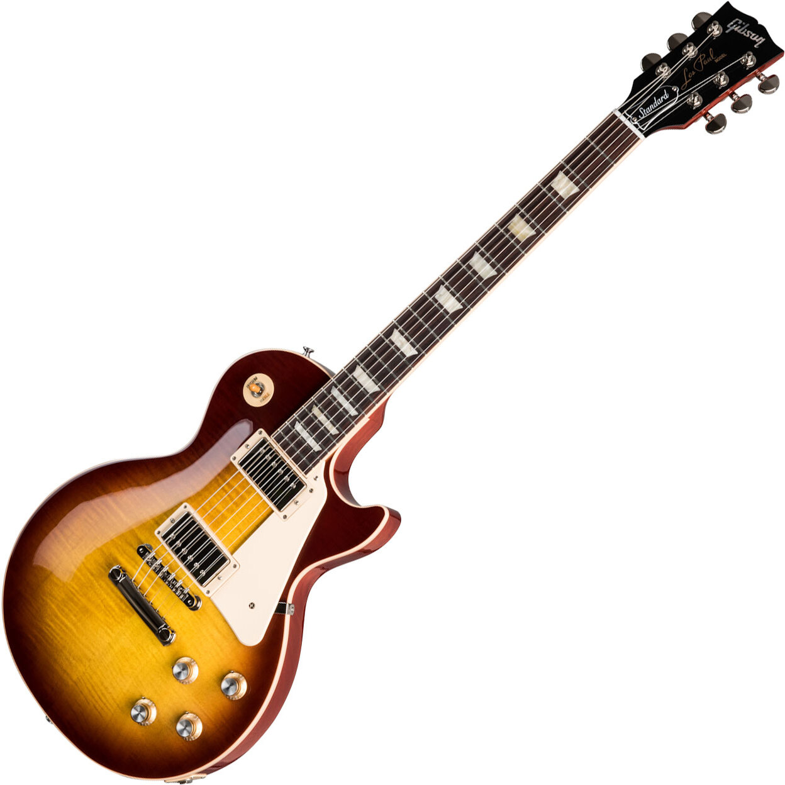
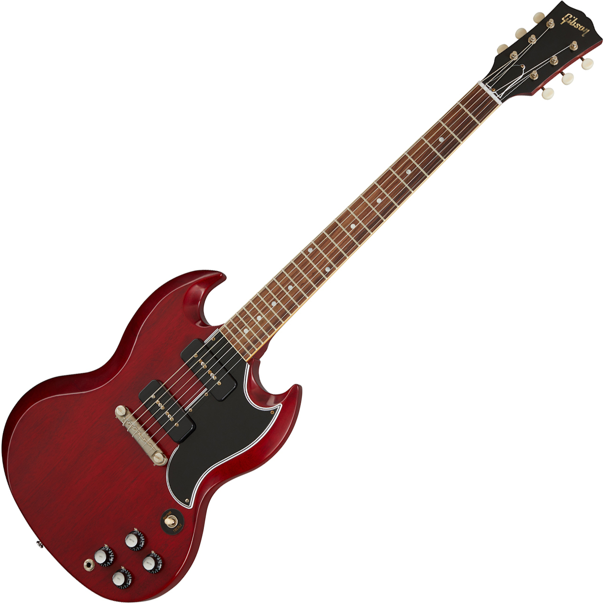
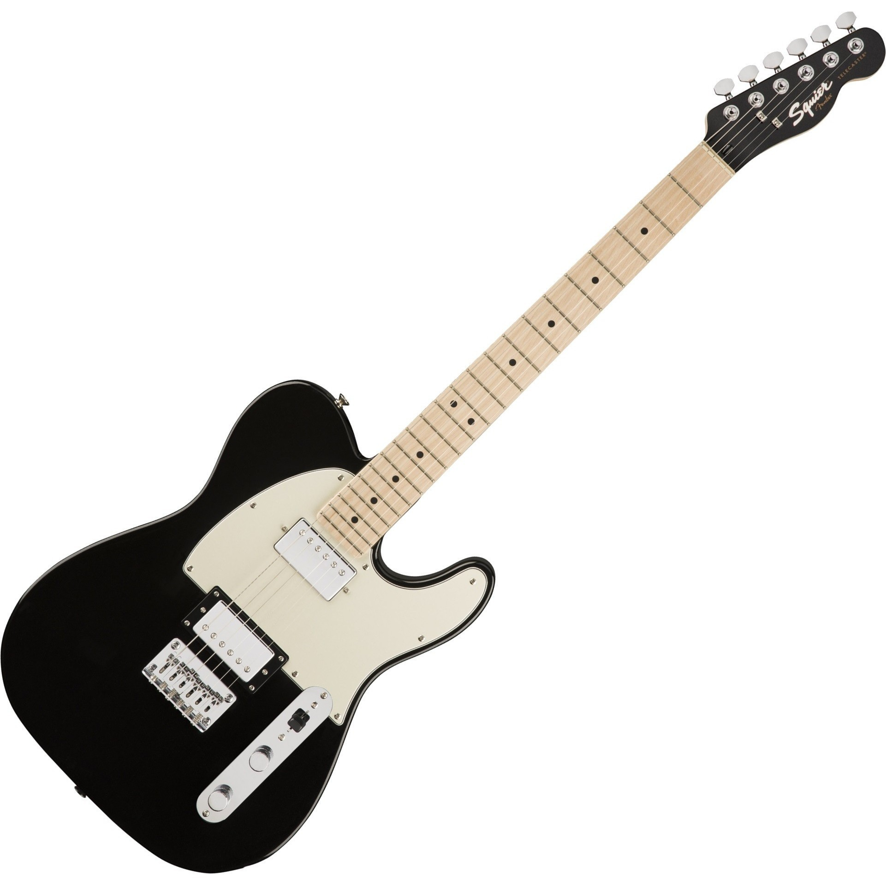
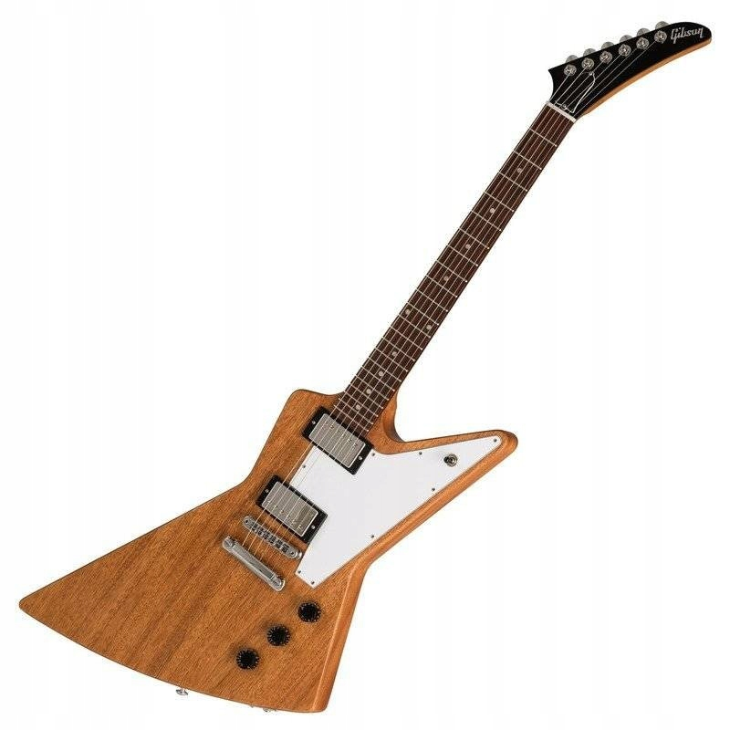

Just Guitars
This section of the site contains images of various guitars, and information about them. Cult series, rare specimens, beloved and proven models and just guitars...
Fender Stratocaster
Outside of the Gibson Les Paul Standard, no electric guitar says rock-and-roll like the dual-horned Fender Stratocaster. It could be the most easily-recognized and widely-played electric guitar in the world, by pros and amateurs alike. Exactly how ironic is this ax? Well, Jimi Hendrix set fire to it, Eric Clapton bought six at once, Stevie Ray Vaughn singlehandedly resurrected blues with it, and Pink Floyd’s David Gilmour owns serial number #0001.
Year introduced: 1954
Gibson Les Paul Standard
One of two of the most recognized electric guitars in the world along with Fender’s Stratocaster, the Gibson Les Paul Standard has been THE electric guitar for generations of rock-and-rollers. There’s nothing quite like the universal appeal of the Standard’s beautiful, simple design and smooth lines. After all, it’s not called the Standard for anything.
Year introduced: 1958
Gibson SG Standard
The best-selling Gibson guitar of all time, the SG (officially renamed the SG Standard in 1963) was originally intended as a redesign of the Les Paul Standard. When the SG hit in 1961, it sold more than three times the number of Les Paul Standards sold in the guitar’s entire three-year run from 1958–60. Maybe that’s because the SG looks as hard as it rocks.
Year introduced: 1961
Fender Telecaster
Originally introduced as the Broadcaster, the Telecaster, or Tele, hasn’t evolved much over the years, and with good reason. After all, when you’re the revolutionary model that finally put solid-body electric guitars on the map and started the rock-and-roll lead guitar phenomenon, what exactly do you need to improve on? The original’s simple design and fluid lines have been retained throughout the Tele’s production, which has gone uninterrupted since its debut over 60 years ago.
Year introduced: 1950
Gibson Explorer
The Gibson Explorer is a type of electric guitar model by Gibson guitars. The Explorer offered a radical, "futuristic" body design. The Explorer was the final development of a prototype design that, years later, Gibson marketed under the name Futura.The Explorer became especially popular among the hard rock and heavy metal musicians of the 1970s and 1980s.